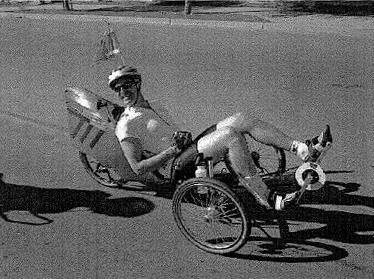

Low-Key Hillclimbs Aggregate Results:
Quimby Road
generated Fri Nov 4 10:34:15 PDT 2016
|
|  |
| 1998 week 5: First Low-Key Trike in History! (photo: Randy Nelson) |
Results are listed here from the Low-Key archives, sorted by time for each climb. Some years start and/or finish time differ slightly, such as
with Kings Mt Road where after 1995 the start moved from Entrance Way to Greer.
Results are ranked by time first, score second.
Score is calculated using a simple percent-of-median-speed
formula, with time adjustments for division. These scores will generally differ from those calculated in the results for that particular year, since
the scoring scheme has evolved. Tandems are split between 1998, when they were counted as single participants, and other years, when the individual
riders have been counted separately
Results for Men
| rank | time | score | rider | cat | team | year | week | code |
|---|
| 1 | 24:18 | 141.754 | Tracy Colwell | Men | Team Colwell | 1998 | 5 | |
| 2 | 26:23 | 126.658 | Daniel Connelly | 4 | Stanford/Wheelsmith | 1995 | 10 | |
| 3 | 26:56 | 127.894 | Tim Clark | 3 | Team Newborn | 1998 | 5 | |
| 4 | 27:20 | 126.023 | Eric Albrecht | 4 | Menlo Velo | 1998 | 5 | |
| 5 | 27:30 | 125.259 | Jeff Emery | 5 | | 1998 | 5 | |
| 6 | 27:32 | 125.107 | Curt Ferguson | | TNT | 1998 | 5 | |
| 7 | 27:50 | 123.759 | Eric Nitschke | Punk | SJSU | 1998 | 5 | |
| 8 | 27:56 | 123.316 | Troy Soares | 5 | TRH Racing | 1998 | 5 | |
| 9 | 28:00 | 123.022 | Bryan Buck | Mountain Bike | Buck Racing | 1998 | 5 | |
| 10 | 28:35 | 120.511 | Robert Murillo | | | 1998 | 5 | |
| 11 | 28:40 | 120.161 | Chris Oliver | | Team Mimosa | 1998 | 5 | |
| 12 | 28:49 | 115.963 | Bart Barmettler | 40+ | Alto Velo | 1995 | 10 | |
| 13 | 28:54 | 119.191 | Scott Martin | 40+ | Bike Trip/Symantec | 1998 | 5 | |
| 14 | 28:56 | 119.054 | Jeremy Smith | 3 | San Jose Bike Club | 1998 | 5 | |
| 15 | 29:04 | 118.507 | Mike Podgorski | 35+ | TNT | 1998 | 5 | |
| 16 | 29:05 | 114.900 | Jim Wilkinson | 35+ | Team Adventure | 1995 | 10 | |
| 17 | 29:06 | 118.372 | Chris Preas | Public | TNT | 1998 | 5 | |
| 18 | 29:15 | 117.765 | Richard Herms | 35+ | Team Adventure | 1998 | 5 | |
| 19 | 29:32 | 116.635 | Tom Gardin | | HLBC | 1998 | 5 | |
| 20 | 29:38 | 116.241 | Jackson Stewart | 2 | LGBRC | 1998 | 5 | |
| 21 | 29:50 | 115.462 | Ron LeBard | 50+ | Alto Velo | 1998 | 5 | |
| 22 | 29:57 | 111.575 | Richard Herms | 35+ | Team Adventure | 1995 | 10 | |
| 23 | 29:58 | 114.948 | Bill Bushnell | | TNT | 1998 | 5 | |
| 24 | 30:02 | 114.693 | Roy Skinner | 4 | LGBRC | 1998 | 5 | |
| 25 | 30:08 | 114.312 | David George | | | 1998 | 5 | |
| 26 | 30:40 | 108.967 | Lance Waltjen | Any | Delta Velo | 1995 | 10 | |
| 27 | 31:00 | 111.117 | Bob Parker | | Republic of Anaerobia | 1998 | 5 | |
| 28 | 31:06 | 110.759 | Giorgio Cosentino | Public | TNT | 1998 | 5 | |
| 29 | 31:17 | 110.110 | Nigel White | | Bikeaholics | 1998 | 5 | |
| 30 | 31:45 | 108.492 | Hal Stanley | | | 1998 | 5 | |
| 31 | 31:52 | 108.095 | Ken Straub | 1 | Bikeaholics | 1998 | 5 | |
| 32 | 31:53 | 108.038 | Phil Brotherton | | San Jose Bike Club | 1998 | 5 | |
| 33 | 32:06 | 104.102 | Bob McDermand | 50+ | San Jose Bike Club | 1995 | 10 | |
| 34 | 32:09 | 103.940 | John Schatzman | 4 | Alto Velo | 1995 | 10 | |
| 35 | 32:20 | 106.535 | Bill Peete | 45+ | Bike Trip/Symantec | 1998 | 5 | |
| 36 | 32:24 | 106.315 | David Snyder | Vintage Concept | Pedersen | 1998 | 5 | |
| 37 | 32:29 | 106.043 | Michael Joe | | Bikeaholics | 1998 | 5 | |
| 38 | 32:50 | 104.912 | Greg Dougald | 35+ | Alto Velo | 1998 | 5 | |
| 39 | 32:55 | 104.647 | Dean Larson | 35+ | Team Dino | 1998 | 5 | |
| 40 | 32:56 | 104.594 | Daniel Law | | | 1998 | 5 | |
| 41 | 33:25 | 100.000 | Ed Miller | 55+ | | 1995 | 10 | |
| 42 | 33:47 | 98.915 | Rod Gatch | 40+ | San Jose Bike Club | 1995 | 10 | |
| 43 | 33:57 | 98.429 | John Alafouzos | 40+ | Team Adventure | 1995 | 10 | |
| 44 | 34:04 | 101.114 | Ted Rees | 50+ | | 1998 | 5 | |
| 45 | 34:09 | 97.853 | Jonathan Martinez | 35+ | Team Adventure | 1995 | 10 | |
| 46 | 34:12 | 100.720 | Bob McDermand | | San Jose Bike Club | 1998 | 5 | |
| 47 | 35:05 | 98.184 | Mark Slavonia | 4 | | 1998 | 5 | |
| 48 | 35:13 | 97.812 | Zach Walker | 3 | LGBRC | 1998 | 5 | |
| 49 | 35:48 | 96.218 | Frank McGorman | | Team Mimosa | 1998 | 5 | |
| 50 | 36:00 | 95.684 | Bill Grasberger | | | 1998 | 5 | |
| 51 | 36:06 | 92.567 | Wayne Smith | 4 | Alto Velo | 1995 | 10 | |
| 52 | 36:09 | 95.287 | Craig Robertson | | | 1998 | 5 | |
| 53 | 36:18 | 94.893 | Bill Moore | 40+ | Team Pasture | 1998 | 5 | |
| 54 | 36:40 | 93.944 | Robert Schott | 40+ | Republic of Anaerobia | 1998 | 5 | |
| 55 | 37:17 | 92.390 | Stephen Fong | | | 1998 | 5 | |
| 56 | 38:00 | 90.648 | Paolo Piacentini | | | 1998 | 5 | |
| 57 | 38:04 | 90.489 | Steven Smith | Klysdale | | 1998 | 5 | |
| 58 | 38:10 | 90.252 | Sebastian Maurer | NC | Pere Et Fils | 1998 | 5 | |
| 59 | 38:18 | 89.938 | Ron Brunner | | Commuter | 1998 | 5 | |
| 60 | 38:24 | 87.023 | Richard Bone | 28 Yr Old Eng | Western Wheelers | 1995 | 10 | |
| 61 | 38:49 | 88.741 | Tim Irvine | Low | SJSU | 1998 | 5 | |
| 62 | 38:50 | 88.703 | Michael Carrasco | | Team Miguel | 1998 | 5 | |
| 63 | 39:22 | 84.886 | Joseph Maurer | 40+ | Good Times | 1995 | 10 | |
| 64 | 39:30 | 84.599 | Henry Hurkmans | 4 | Fremont Freewheeler | 1995 | 10 | |
| 65 | 40:14 | 85.616 | Allen Price | | | 1998 | 5 | |
| 66 | 40:47 | 84.461 | Wayne Westgate | | Team Pasture | 1998 | 5 | |
| 67 | 41:16 | 80.977 | Sebastean Maurer | NA | Good Times | 1995 | 10 | |
| 68 | 42:00 | 82.015 | Nick Leavy | | | 1998 | 5 | |
| 69 | 42:12 | 81.626 | Bill Ekstrom | | Dad Daughter Dynamic Duo | 1998 | 5 | |
| 70 | 42:18 | 81.433 | Frank Smoot | | Turbo Snails | 1998 | 5 | |
| 71 | 42:35 | 80.891 | Bryn Dole | Former Cat 5 | Team Internet | 1998 | 5 | |
| 72 | 42:39 | 80.765 | Christoph Schuba | | Team Internet | 1998 | 5 | |
| 73 | 43:26 | 79.308 | Randy Nelson | 40+ | Team Pasture | 1998 | 5 | |
| 74 | 43:38 | 78.945 | Stephen Morris | Open | Team Adventure | 1998 | 5 | |
| 75 | 44:00 | 78.287 | Albert Li | 5 | Republic of Anaerobia | 1998 | 5 | |
| 76 | 44:47 | 76.917 | Joseph Maurer | HC | Pere Et Fils | 1998 | 5 | |
| 77 | 45:08 | 74.040 | Fred Butts | 50+ | Team FRED | 1995 | 10 | |
| 78 | 45:15 | 76.124 | Rich Brunner | | | 1998 | 5 | |
| 79 | 45:24 | 75.873 | Fred Butts | 50+ | TNT | 1998 | 5 | |
| 80 | 45:52 | 75.101 | Leo Menestrina | 5 | Alto Velo | 1998 | 5 | |
| 81 | 46:51 | 73.524 | Mark Banke | | Too Tall & Too Slow | 1998 | 5 | |
| 82 | 48:44 | 70.683 | Chuck Blancarte | | | 1998 | 5 | |
| 83 | 50:27 | 68.278 | Don Low | | Team Miguel | 1998 | 5 | |
| 84 | 52:26 | 65.695 | Jim Lang | | | 1998 | 5 | |
| 85 | 53:50 | 63.987 | Scott Seligman | | Special Circumstances | 1998 | 5 | |
Results for Women
| rank | time | score | rider | cat | team | year | week | code |
|---|
| 1 | 33:31 | 120.267 | Liz Benishin | 3 | Alto Velo | 1995 | 10 | |
| 2 | 34:05 | 121.911 | Janet Ekstrom | | Dad Daughter Dynamic Duo | 1998 | 5 | |
| 3 | 34:34 | 120.207 | Cornelia Fletcher | | Menlo Velo | 1998 | 5 | |
| 4 | 34:50 | 119.287 | Phyllis Olrich | 45+ | Alto Velo | 1998 | 5 | |
| 5 | 36:30 | 110.437 | Cheryl Herms | 35+ | Team Adventure | 1995 | 10 | |
| 6 | 40:25 | 102.808 | Lorna Toyota | | Bikeaholics | 1998 | 5 | |
| 7 | 41:03 | 101.222 | Carla Cosentino | Public | TNT | 1998 | 5 | |
| 8 | 41:20 | 100.528 | Nancy Beer | 25+ | Team Dino | 1998 | 5 | |
| 9 | 42:29 | 97.807 | Christie Hunter | | Team Miguel | 1998 | 5 | |
| 10 | 44:07 | 94.185 | Meg Geherd | | | 1998 | 5 | |
| 11 | 45:38 | 91.055 | Judith Butts | | TNT | 1998 | 5 | |
| 12 | 48:16 | 86.087 | Sheryl Weinman | | | 1998 | 5 | |
| 13 | 50:04 | 82.992 | Jane Wang | | | 1998 | 5 | |
| 14 | 53:50 | 77.185 | Catherine Slavonia | Women Unlicensed | | 1998 | 5 | |
| 14 | 53:50 | 77.185 | Kathy Podgorski | | TNT | 1998 | 5 | |
Results for Mixed
| rank | time | score | rider | cat | team | year | week | code |
|---|
| 1 | 34:28 | 109.284 | John Serafin/Lisa Antonino | Mixed Tandem | Bikeaholics | 1998 | 5 | |
| 2 | 37:40 | 100.000 | Mike Jensen/Liz Borra | Mixed Tandem | Bikeaholics | 1998 | 5 | |
| 2 | 37:40 | 100.000 | Tom Lawrence/Sarah Beaver | Mixed Tandem | Bikeaholics | 1998 | 5 | |
Results for Tricycle
| rank | time | score | rider | cat | team | year | week | code |
|---|
| 1 | 47:00 | 73.290 | Joe Lansing | Trike | TNT | 1998 | 5 | |